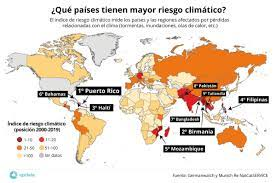
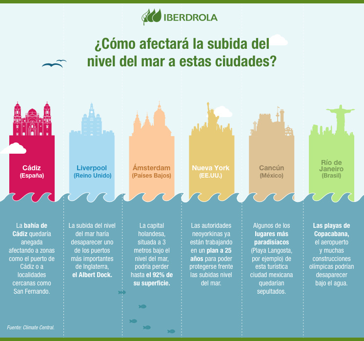

IMPACTO DEL CAMBIO CLIMATICO EN EL MUNDO

Previo a la COP26, gran parte de la conversación ha girado en torno a predicciones sobre el futuro y los compromisos venideros para que se emprendan acciones más contundentes: neutralidad de carbono hacia 2030 y cero neto hacia el 2050.
Sin embargo, el cambio climático ya es una realidad cotidiana para millones de personas en el mundo.
Noventa por ciento de las personas refugiadas bajo el mandato de ACNUR provienen de países que están sufriendo los estragos de la emergencia climática; lo mismo ocurre con el 70% de las personas desplazadas al interior de sus países a causa de conflictos y violencia.
Estas personas son vulnerables no solo a condiciones climáticas extremas, como ciclones e inundaciones, sino también a la desaparición de sus medios de vida como resultado de sequías y desertificación.
Desde Burkina Faso hasta Bangladesh, desde Afganistán hasta Mozambique, el cambio climático está aumentando los índices de pobreza, inestabilidad y movilidad humana; asimismo, está alimentando tensiones y competencia para obtener recursos que empiezan a escasear.
Las personas que huyeron en algún momento deben hacerlo nuevamente debido a brotes de violencia y condiciones climáticas extremas. No obstante, incluso si se restaura la paz, las personas desplazadas no podrán volver si las áreas donde se encuentran sus hogares se tornan inhabitables debido a sequías, inundaciones o el aumento de los niveles del mar.
Estamos en presencia de la devastadora fusión entre conflicto y cambio climático, la cual está provocando desplazamiento y precariza aún más la vida de las personas que se ven obligadas a huir.
Cómo afecta el cambio climático a los océanos del planeta
"Hace mucho que el océano soporta la carga del impacto del ser humano sobre el calentamiento global", afirma el Plan de acción contra el cambio climático de la ONU. Gracias a su labor como mayor sumidero de carbono del planeta, el océano absorbe el exceso de calor y energía liberado a causa de las emisiones de gases en aumento atrapadas en el sistema de la Tierra. En la actualidad, el océano ha absorbido alrededor del 90 % del calor generado por unas emisiones al alza.
A medida que un exceso de calor y energía calientan el océano, el cambio en la temperatura lleva a unos efectos progresivos sin precedentes, que incluyen el deshielo de los polos, el aumento del nivel del mar, olas de calor marinas y acidificación del océano.
Estos cambios provocan, en última instancia, un efecto perdurable sobre la biodiversidad marina y sobre las vidas y medios de subsistencia de las comunidades costeras, e incluso más, entre las que se incluyen cerca de 680 millones de personas que viven en áreas costeras bajas, casi 2000 millones que viven en la mitad de las grandes metrópolis del mundo situadas en la costa, casi la mitad de la población mundial (3300 millones) que depende de la pesca para obtener sus nutrientes proteicos y casi 60 millones de personas que trabajan en la industria pesquera y el sector acuícola en todo el mundo.
Presentamos aquí algunas de las consecuencias más importantes de estos impactos del cambio climático sobre el océano.
La subida del nivel del mar

El aumento del nivel del mar provocado por el calentamiento global podría alcanzar los 2 metros de altura a finales del siglo XXI. Esta crecida de los océanos dejaría miles de kilómetros de costa a merced de las inundaciones, comprometiendo la seguridad de 745 millones de personas en todo el mundo.
Cuando en 1968 los astronautas del Apolo 8 tomaron las primeras fotografías en color de la Tierra, toda la humanidad pudo constatar que nuestro planeta, además de redondo, es de un intenso color azul. Medio siglo después sabemos que los mares y océanos cubren el 71% de la superficie terrestre, lo que dota a nuestro mundo de esa tonalidad tan característica que lo convierte en un lugar único de nuestra galaxia y, quizás, de todo el universo.
Aumento del nivel del mar
La subida del nivel del mar, ¿un peligro real para nuestro futuro?
Naturaleza
El aumento del nivel del mar provocado por el calentamiento global podría alcanzar los 2 metros de altura a finales del siglo XXI. Esta crecida de los océanos dejaría miles de kilómetros de costa a merced de las inundaciones, comprometiendo la seguridad de 745 millones de personas en todo el mundo.
aumento nivel mar
El aumento del nivel del mar amenaza con sumergir cientos de ciudades costeras en todo el mundo.
Cuando en 1968 los astronautas del Apolo 8 tomaron las primeras fotografías en color de la Tierra, toda la humanidad pudo constatar que nuestro planeta, además de redondo, es de un intenso color azul. Medio siglo después sabemos que los mares y océanos cubren el 71% de la superficie terrestre, lo que dota a nuestro mundo de esa tonalidad tan característica que lo convierte en un lugar único de nuestra galaxia y, quizás, de todo el universo.
¿Por qué aumenta el nivel del mar? Causas
Lo que nadie imaginaba hace cinco décadas es que las emisiones actuales de CO2 calentarían el planeta hasta propiciar el deshielo de los polos y el retroceso de los glaciares. La velocidad a la que avanza el cambio climático, intensificada por la acción del hombre, ha elevado el nivel del mar unos 7 cm desde 1993 y unos 18-20 cm desde 1900, según recogió el Gobierno de EE.UU. en su informe Climate Science Special Report (CSSR).